| beta | share_activation | neg_within_group | batch | early_stop | sample_id | key_prefix | |
|---|---|---|---|---|---|---|---|
| 0 | 1 | gelu | True | 32 | False | LEAP-008A | beta1_actgelu_neg1_batch32_early_stop0 |
Run details
1 Configuration
2 Training curves
| step | train/total_loss | train/recon_loss_weighted | train/mmd_loss | train/triplet_loss_weighted | train/grad_norm | train/lr | train/smooth_total_loss | |
|---|---|---|---|---|---|---|---|---|
| 0 | 0 | 2.847671 | 1.077215 | 0.110782 | 1.659675 | 1.146980 | 0.0001 | 2.847671 |
| 1 | 1 | 2.570772 | 1.001883 | 0.079764 | 1.489125 | 1.153926 | 0.0001 | 2.709222 |
| 2 | 2 | 2.400407 | 0.986015 | 0.074665 | 1.339727 | 1.203293 | 0.0001 | 2.606283 |
| 3 | 3 | 2.408864 | 0.981357 | 0.077417 | 1.350090 | 1.406415 | 0.0001 | 2.556928 |
| 4 | 4 | 2.451592 | 0.977175 | 0.079814 | 1.394603 | 1.500943 | 0.0001 | 2.535861 |
| ... | ... | ... | ... | ... | ... | ... | ... | ... |
| 4995 | 4995 | 1.664253 | 0.756063 | 0.040786 | 0.867405 | 3.188232 | 0.0001 | 1.640516 |
| 4996 | 4996 | 1.626271 | 0.756793 | 0.040386 | 0.829092 | 3.533153 | 0.0001 | 1.639599 |
| 4997 | 4997 | 1.660288 | 0.757420 | 0.040525 | 0.862344 | 3.833417 | 0.0001 | 1.642482 |
| 4998 | 4998 | 1.642188 | 0.756572 | 0.040791 | 0.844825 | 3.371194 | 0.0001 | 1.644840 |
| 4999 | 4999 | 1.671372 | 0.757810 | 0.040264 | 0.873298 | 3.482312 | 0.0001 | 1.647410 |
5000 rows × 8 columns
3 Curves
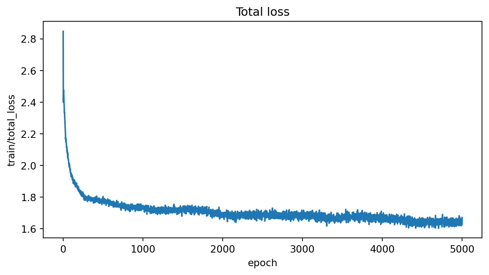
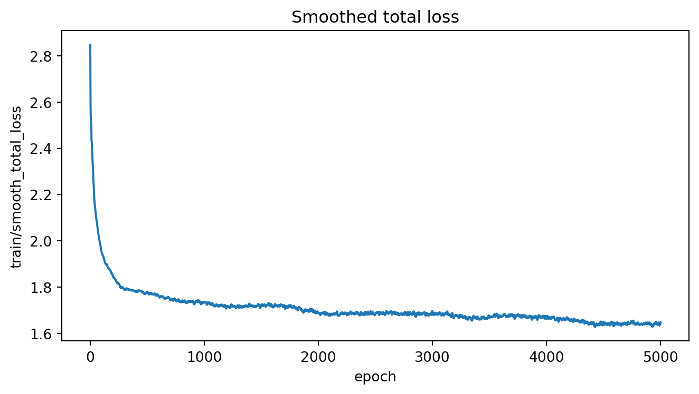
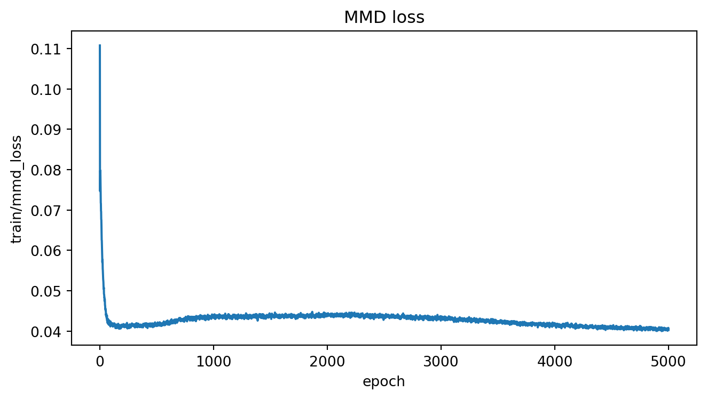
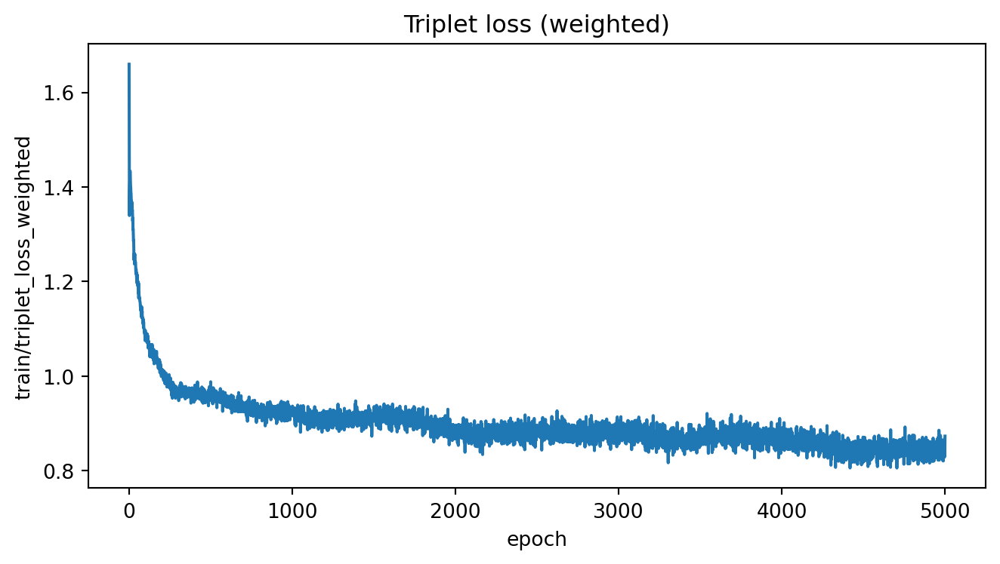
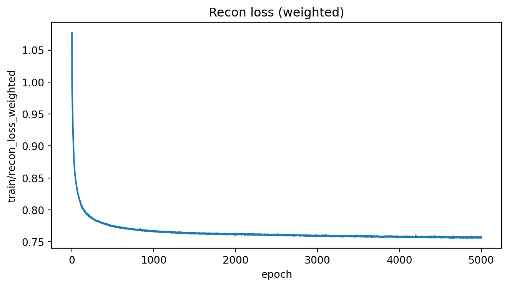
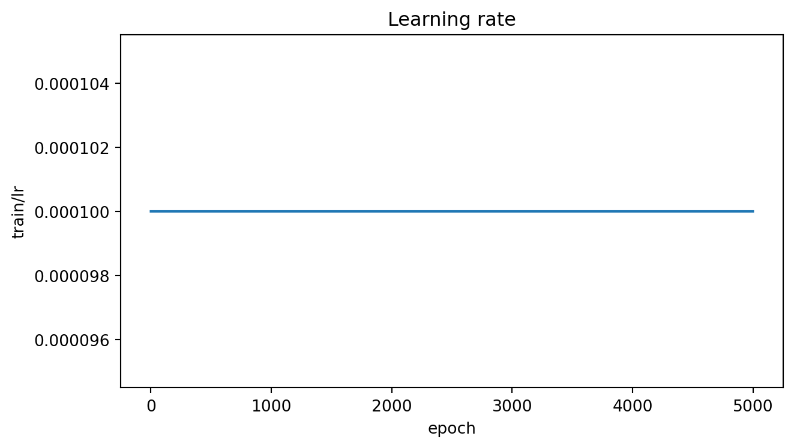
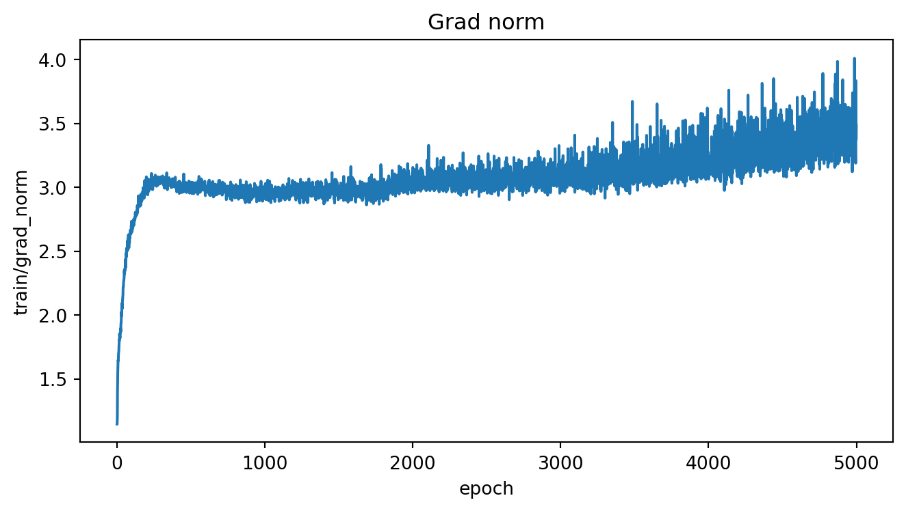
4 Key figures
../assets/model_results/20260115_162427__beta1_actgelu_neg1_batch32_early_stop0/figures/01_global_integration.png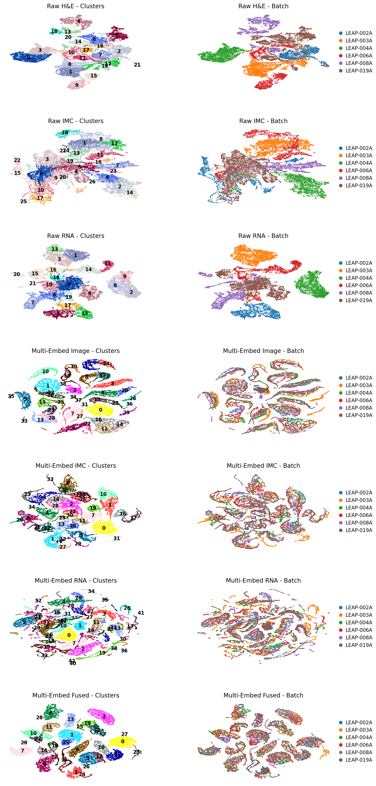
../assets/model_results/20260115_162427__beta1_actgelu_neg1_batch32_early_stop0/figures/02_recluster_LEAP-008A.png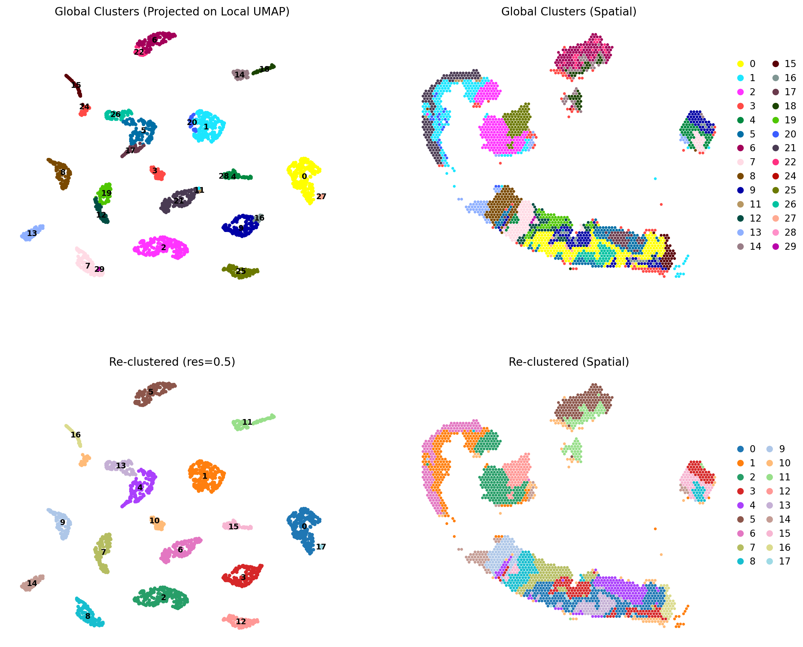
../assets/model_results/20260115_162427__beta1_actgelu_neg1_batch32_early_stop0/figures/03_alignment_LEAP-008A.png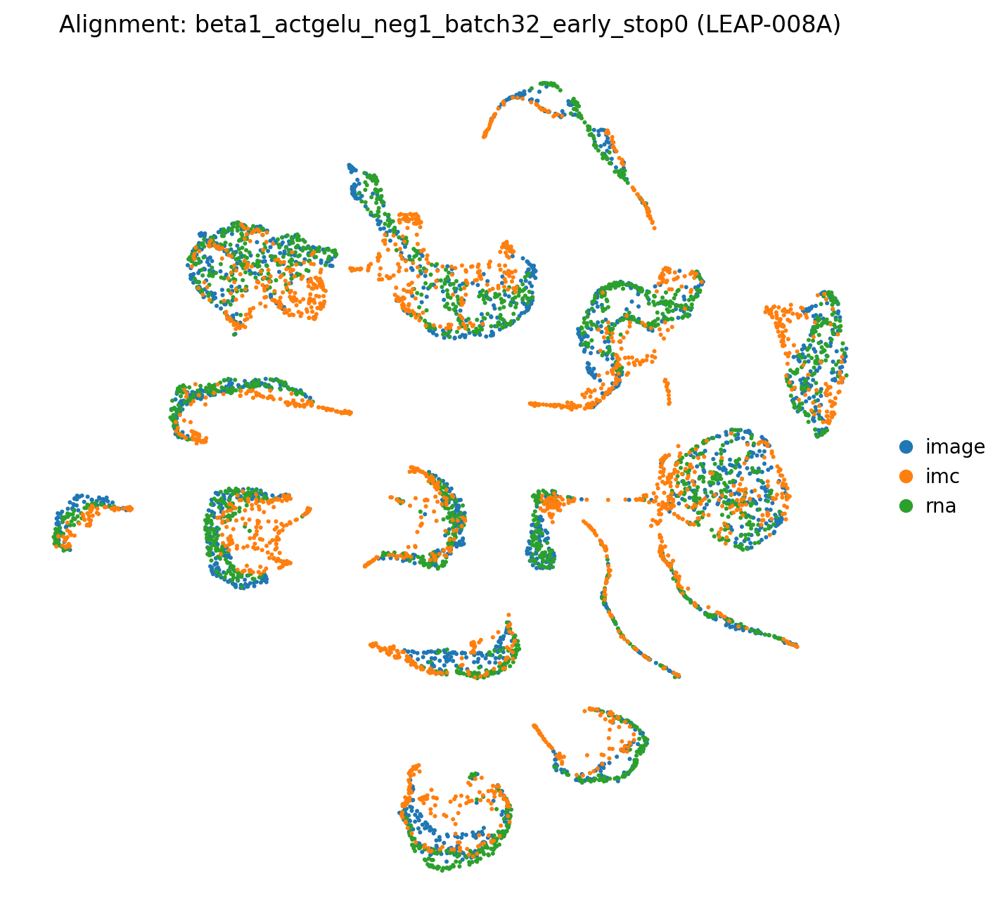
../assets/model_results/20260115_162427__beta1_actgelu_neg1_batch32_early_stop0/figures/04_alignment_all.png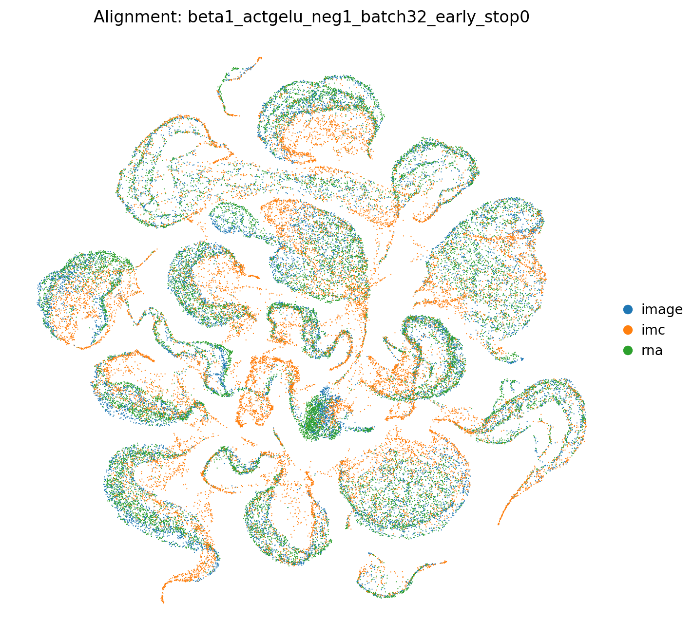
../assets/model_results/20260115_162427__beta1_actgelu_neg1_batch32_early_stop0/figures/05_harmony_fused_comparison.png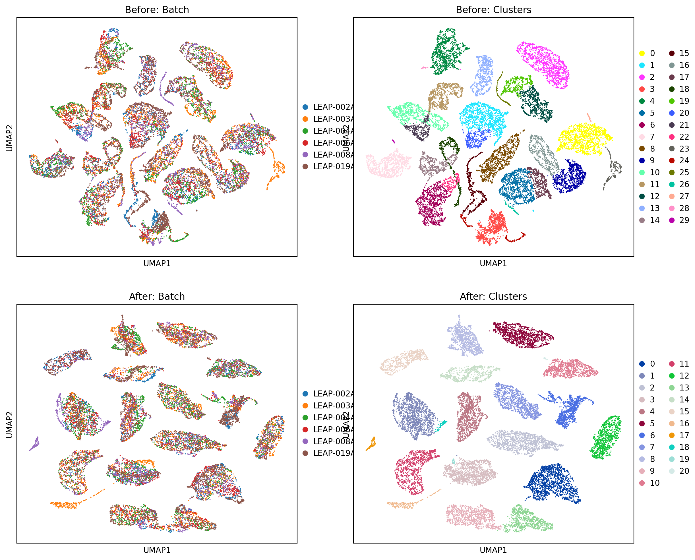